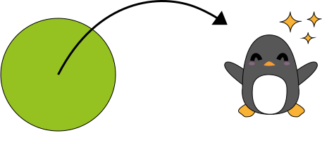

<div class="sobreMi h-full w-3/4 flex items-center">
    <div class=" ml-16 m-10 transform rotate-3 rounded-3xl bg-blue">
      <div class="bg-white transform -rotate-3 bourder-black border-2 rounded-xl flex flex-row flex-wrap">
      <div class="flex flex-row flex-wrap justify-center items-center" *ngIf="pageOne">
        
      <div class="w-1/2 p-3 flex flex-col">
      <h5 class="text-xl mt-2">La magia ocurre fuera de tu zona de confort</h5>
        <p class="mt-2 mb-2 text-justify text-base">Cuando oí esta frase por primera vez, estaba totalmente fuera de mi zona de confort. Había pasado de trabajar en
          turismo a adentrarme en el mundo de la programación, en un curso que además, iba destinado a gente que ya tenía algunos conocimientos previos.
          Y la magia sucedió. Poco a poco me enamoré de la programación, y pasé de sentirme perdida a sentir que era lo mío, que disfrutaba con ello
          y que quería dedicarme a ello.
        </p>
        <i (click)="onClick()" class="fas fa-chevron-circle-right fa-3x back p-1 self-end"></i>
      </div>
      </div>

      <div *ngIf="!pageOne" class="w-1/2 p-3 flex flex-row flex-wrap items-end">
        <div></div>
        <div>
          <p class="mt-5 ml-8 mb-5 text-justify text-base">Soy la clase de persona que se arriesga a cruzar esa zona de confort, que intenta pensar fuera de la caja, que adora conocer gente nueva y diferentes maneras de hacer las cosas,
            y que intenta aprender algo cada día.
          Y he decidido reencaminar mi carrera hacia el desarrollo web porque me permite ser esa clase de persona en el mundo laboral.</p>
          <ul class="absolute right-16 top-7 photos h-1/2 rounded-xl">
            <li></li>
            <li></li>
            <li></li>
          </ul>
          <i (click)="onClick()" class="fas fa-chevron-circle-left fa-3x back p-1 self-start"></i>
        </div>


    </div>

    </div>
</div>

